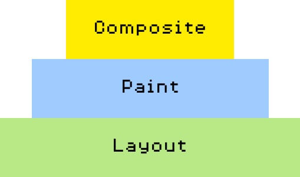

Let's ⚡ talk about CSS triggers
By Chen Hui Jing / @hj_chen
How browsers render stuff (generally)
- Different browsers use different rendering engines but follow similar flow
- Browser will parse the markup, then "Recalculate Style" to figure out what styles apply to which elements
- Next, it will "Layout" all the DOM elements
- Then, "Paint" the pixel data for the elements
- And, "Composite" will combine and draw the painted layers out onto the screen
Think of it as a pyramid
If you change something at the bottom, the pyramid has to be rebuilt from the bottom.
Layout
- Generate geometry and position of each element
- Very expensive because engine must reflow the relevant element and all its children to take into account the new layout
- Occurs when the DOM tree is manipulated, or a style which affects layout is changed, when browser window size is changed, when className property is changed
CSS properties that trigger Layout
- width
- height
- padding
- margin
- display
- border-width
- border
- top
- position
- font-size
- float
- text-align
- overflow-y
- font-weight
- overflow
- left
- font-family
- line-height
- vertical-align
- right
- clear
- white-space
- bottom
- min-height
Paint
- Fill out pixels for each element into layers
- Make something visible when it previously was not, like adding outline or changing background colour
- Expensive because the engine searches through all elements to determine what is visible and what should be displayed
- Browser vendors are scrambling to improve the renderer, but until recently browsers weren't built to handle animations efficiently
CSS properties that trigger Paint
- color
- border-style
- visibility
- background
- text-decoration
- background-image
- background-position
- background-repeat
- outline-color
- outline
- outline-style
- border-radius
- outline-width
- box-shadow
- background-size
Composite
- Only Opacity and Transforms trigger composite
- Blink and Webkit creates new layer for elements with CSS transforms or opacity
- translateZ(0) is used to force layer creation which ensures both the layer is painted as soon as the animation starts
- Watch The Web's Black Magic for best explanation on rendering and compositing
To find out more...
- Jank Free (website)
- CSS Triggers by Paul Lewis (website)
- High Performance Animations by Paul Lewis and Paul Irish
- Hardware Accelerated CSS: The Nice vs The Naughty by Ariya Hidayat
- Animations and performance by Paul Irish and Sam Thorogood
- The Web's Black Magic by Matthew Delaney and Jing Jin (conference talk)
- Animating the Web with Rachel Nabors (podcast)